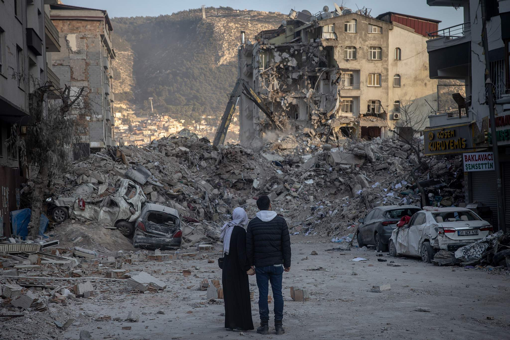

Могущество природы и страх человечества
История показывает, что землетрясения оказывают значительное влияние не
только на природу, но и на судьбы целых народов. К примеру, Великое
чилийское землетрясение 1960 года, магнитудой 9.5, стало крупнейшим
зарегистрированным землетрясением в истории. Оно вызвало цунами, которое
затронуло берега нескольких континентов. Землетрясения часто невозможно
предсказать, что делает их ещё более опасными. Однако современные
технологии, такие как системы раннего оповещения и усовершенствованные
инженерные решения, позволяют значительно снизить человеческие потери и
минимизировать последствия этих катастроф.